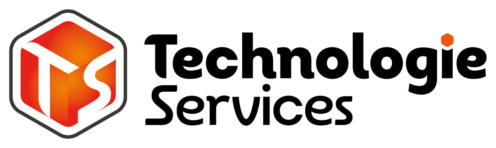

Makes the Grove MP3 player (v3.0) play a track from its microSD card: track 1 is the first MP3 file copied to the card, track 2 the second, and so on.
How to use it?
Copy the MP3 files straight to the root of the microSD card (not into a folder), in the order you want. Slide the card into the back of the module.
Plug the module into a Grove port of the board (P0/P14, P1/P15 or P2/P16) and choose this port in the block. Plug in a speaker (SPK socket) or headphones (PHONE socket).
Good to know
The number follows the order in which the files were copied to the card, not their names: copy them one by one, in order.
The card must be formatted in FAT16 or FAT32 (32 GB at most).
While a command is sent (a few milliseconds), the USB link is lent to the module: the console keeps working, but the module cannot send any information back (current track, volume).
In the simulator, tracks 1 to 6 are six short copyright-free tunes (Au clair de la lune, Frère Jacques, Ode to Joy…): you hear them, and the ‘Devices’ panel shows the track, its title, the state (playing, paused, stopped), the volume and the mode.
Example
On start, the volume is set to 20, then track 1 of the microSD card is played.

EasyBloc micro:bit help sheet - Technologie Services. Editable: edit this HTML file.